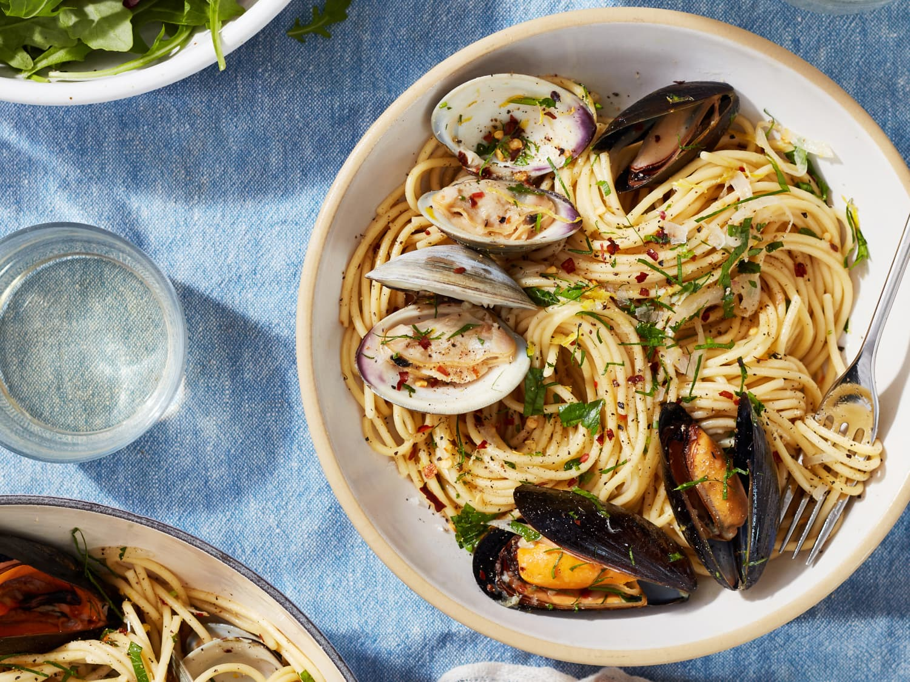
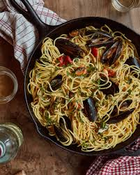

Mussels Pasta Recipe
Ingredients:
- 400g spaghetti or linguine
- 500g fresh mussels, cleaned
- 2 tablespoons olive oil
- 4 cloves garlic, minced
- 1 teaspoon red pepper flakes
- 200ml dry white wine
- 200g cherry tomatoes, halved
- Salt & black pepper to taste
- Fresh parsley, chopped
- Juice of 1 lemon
Instructions:
- Cook pasta in salted boiling water until al dente, then drain.
- In a large pan, heat olive oil and sauté garlic until fragrant.
- Add red pepper flakes and cherry tomatoes, cooking until softened.
- Pour in white wine and bring to a simmer.
- Add mussels, cover, and cook until they open (discard any that remain closed).
- Toss in cooked pasta, lemon juice, and fresh parsley, mixing well.
- Serve immediately, garnished with extra parsley and black pepper.